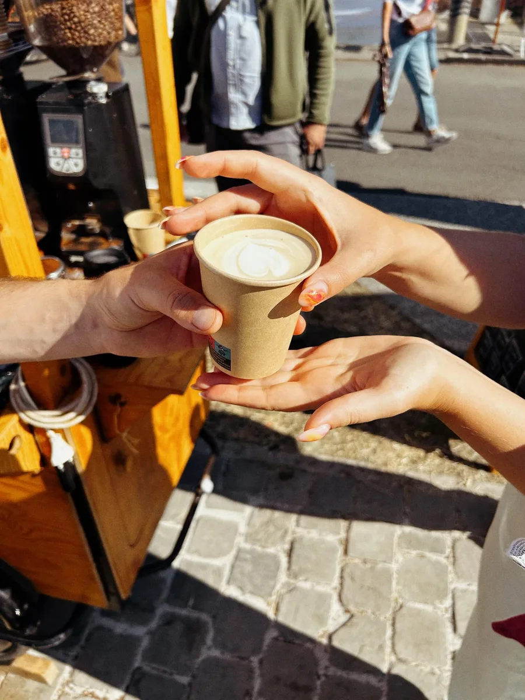
Vrijdag
Vrijdagmarkt
Midden in het centrum, tussen de kramen. Om acht uur staat de machine al warm.
8u tot 12u30elke vrijdagVrijdagmarkt9000 Gent
Elke vrijdag op de Vrijdagmarkt, elke zondag op het Ledebergplein. Een goeie koffie, een babbel en een glimlach erbij. En op aanvraag ook op je event of op kantoor.
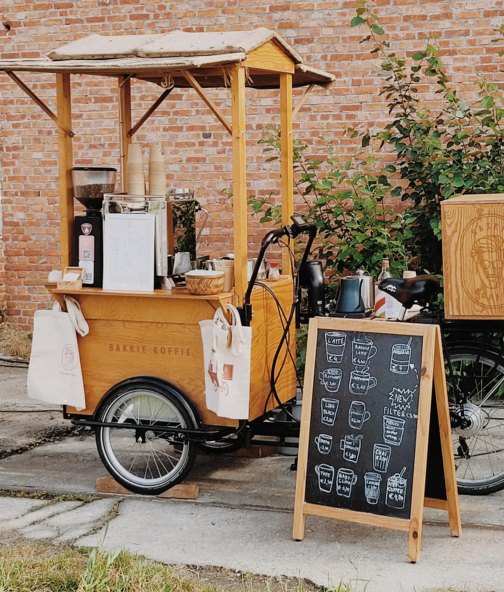
Je ziet er vaak een rij staan. Laat je niet afschrikken, die gaat snel. En aan de bakfiets wordt er altijd wel gebabbeld.

Midden in het centrum, tussen de kramen. Om acht uur staat de machine al warm.
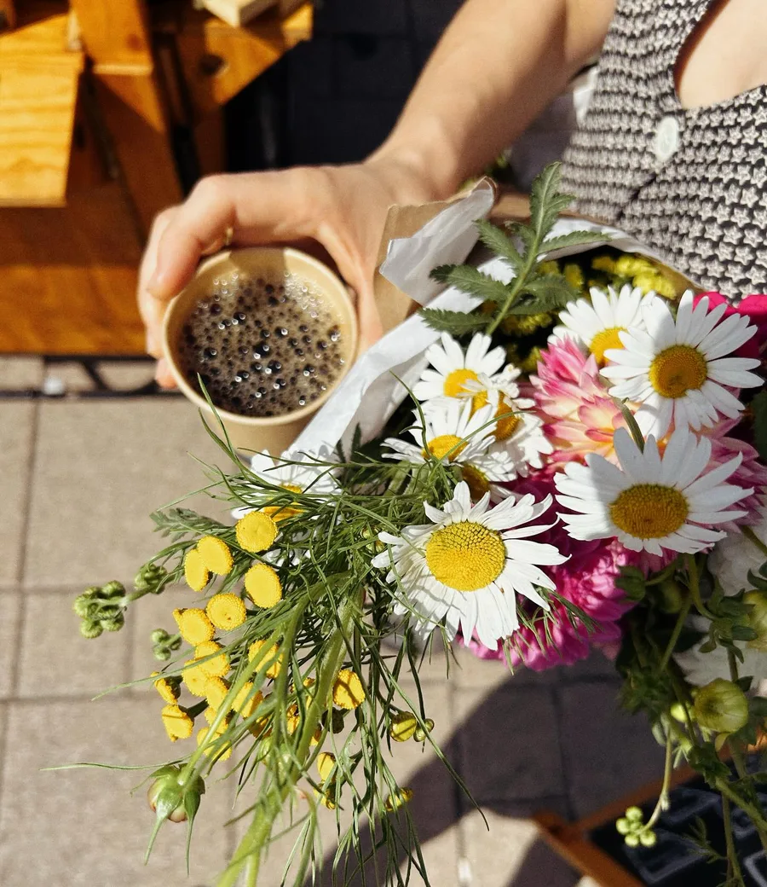
Bloemen halen, groenten halen, en dan een doppio aan de bakfiets. Zo ziet een perfecte zondag eruit.
Vakantie of een uitzondering? Dat zie je altijd eerst op Instagram.
Specialty coffee, met zorg gezet op een machine op een bakfiets. Voor wie geen koffie drinkt, is er chai, thee of warme chocomelk.
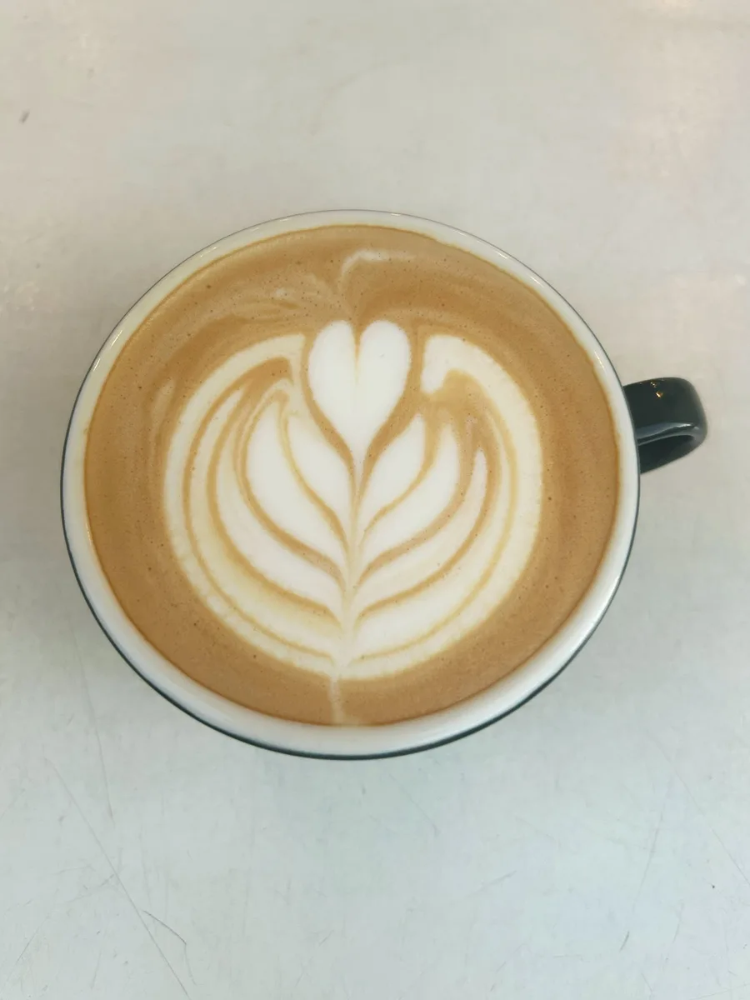
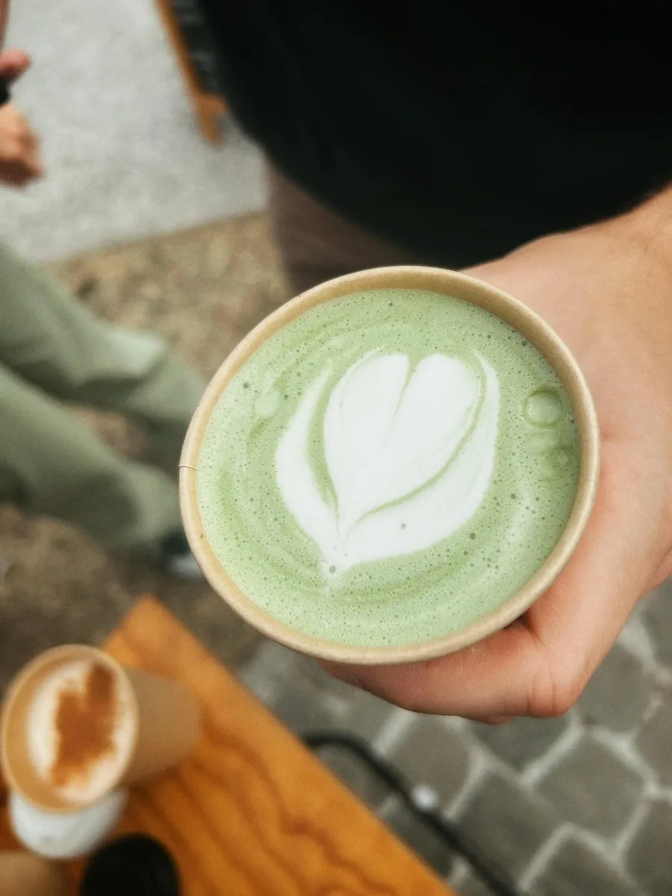
Vijf jaar na de eerste rit kwam er een tweede koffiefiets bij. From an idea to reality, in vier stappen.
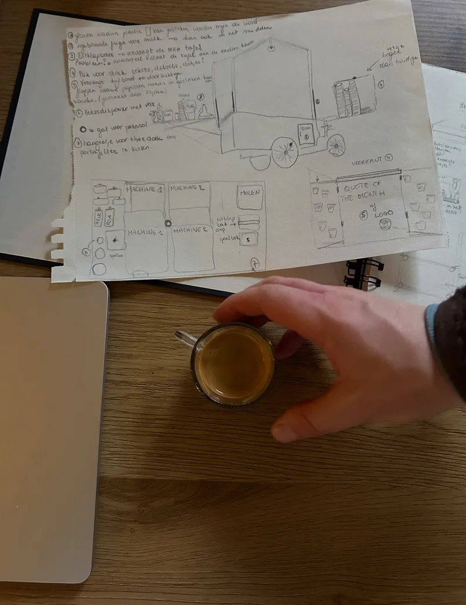
Eerst een paar schetsen, met een espresso ernaast.
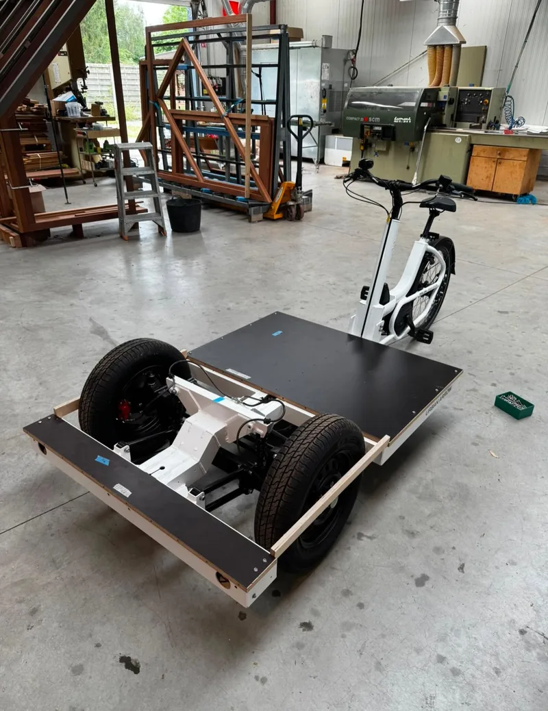
Het frame op wielen, klaar om er een bar op te zetten.
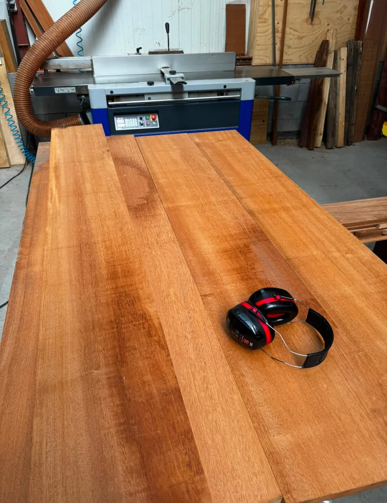
Plank per plank op maat gezaagd en geschaafd.
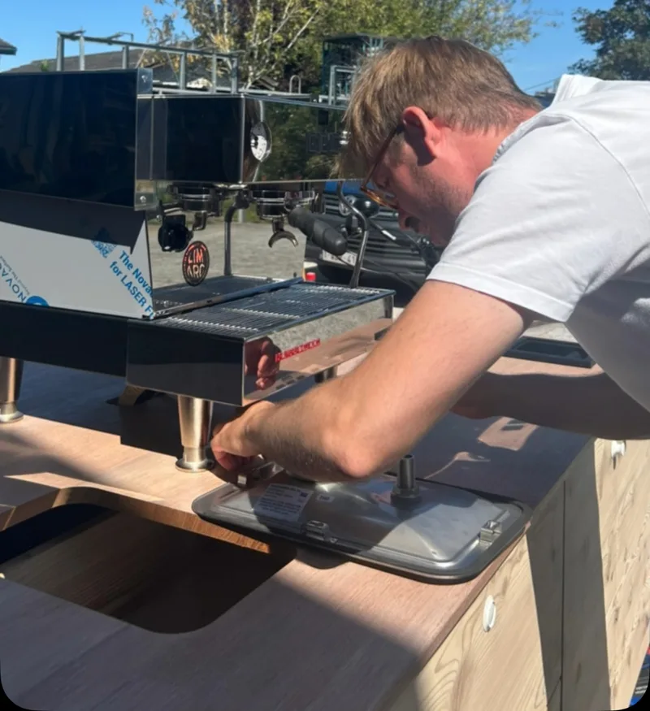
De espressomachine erop, en dan kan Bakkie 2.0 rijden.
Zo vaak klonk "Good morning everybody & I see you here!" in 2025 op de Vrijdagmarkt en in Ledeberg. Met twee fietsen kan dat alleen maar meer worden.
Volg de bouwDe bakfiets past overal waar mensen samenkomen: op een bedrijfsplein, in de inkomhal van je kantoor of op een feest in de tuin. Bakkie zet de koffie, jij hoeft enkel te zeggen waar.
Een ochtend specialty coffee voor je team, bij een opening of gewoon omdat het kan. Trust me, you deserve this.
Een koffiebar op wielen voor je markt, festival, verjaardag of personeelsfeest, binnen of buiten.
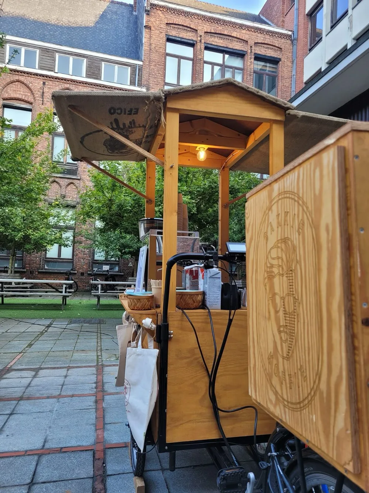
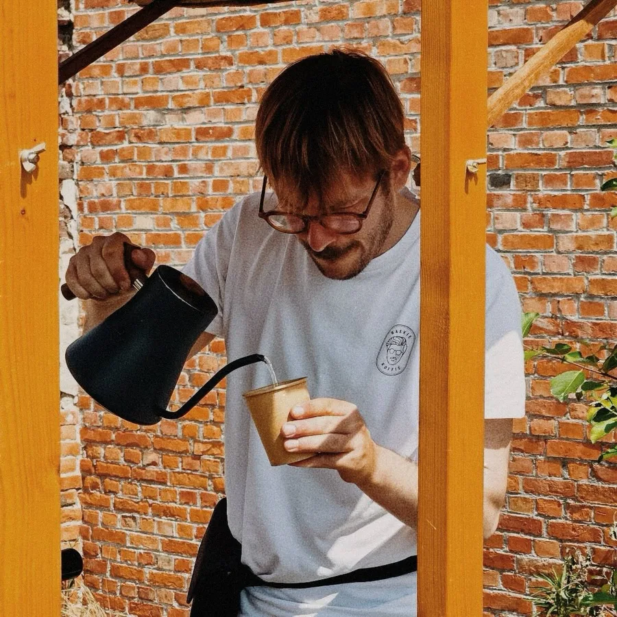
Deze man geeft niet zomaar koffie, hij geeft een ervaring. Super vriendelijk en eigenlijk heel verfrissend in een wereld van ‘snel snel’. Humeur opgekrikt.Aurélie Vercaempt · Google
Voor een heerlijke koffie en een toffe babbel moet je bij Bakkie Gent zijn!! Je zal vaak een rij mensen zien staan, laat dat je niet afschrikken om toch aan te schuiven. De rij gaat snel en het is de moeite waard.Melika R · Google
Vrolijkste barista van Gent! En dan heeft ie nog eens goeie koffie aan betaalbare prijzen.Stefanie Leekens · Google
Wat een zaligheid deze verfijnde en no nonsense heerlijk zondags koffiedrinken tijdens de markt op Ledeberg plein. Ik ben fan van de dopio en de koffiebranderij waar de bonen vandaan komen.Elien Van H · Google
Supervriendelijke barista. Weet mensen ook te verbinden. Hele lekkere koffie.Cien Van Ranst · Google
Ik maakte deze demo voor jullie om te tonen wat er kan. Na een kort gesprek maak ik er iets veel persoonlijkers van, helemaal naar jullie wens.
Vrijblijvend. Ik kom langs of we bellen.
Op maat, op jullie eigen domein.
Geen voorschot. Jullie betalen pas als alles klaar is.
Hosting, domeinnaam en kleine wijzigingen, zoals nieuwe openingsuren.
Omdat een voorbeeld meer zegt dan een mail. Zo zien jullie meteen wat er kan, en het kost jullie niets.
Nee. Het gesprek is vrijblijvend. Vinden jullie het niks, dan is het daarmee gedaan.
Na ons gesprek staat jullie site binnen 10 tot 14 dagen online.
Zeker. Jullie domeinnaam kan gewoon blijven, de nieuwe site komt in de plaats van de oude.
Nee, dat doe ik op basis van ons gesprek. Eigen foto's zijn mooi meegenomen, maar niet nodig om te starten.